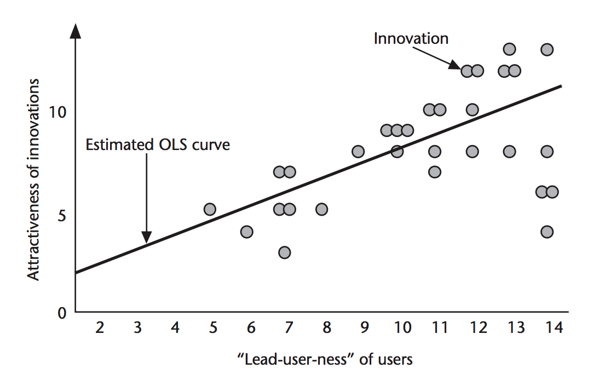

Your browser doesn't support the features required by impress.js, so you are presented with a simplified version of this presentation.
For the best experience please use the latest Chrome, Safari or Firefox browser.

Idea Generation
Rich Hildred - rhildred@conestogac.on.ca - 519-594-0900

Example 1. The other Gore

For Instance Take High Performance Windsurfing

No one wants an innovation from someone who is behind them.

Zero-K a game for the Spring engine.

Mountain Biking.

Google began in January 1996 as a research project by Larry Page and Sergey Brin when they were both PhD students at Stanford University in Stanford, California.
While conventional search engines ... the two theorized about a better system that analyzed the relationships between websites.
These people took something that they were already passionately involved in and innovated to make it better.

IR3 Idea Generation Process Model

Role Playing: Role playing involves designers acting
out scenarios.
Active Search: Active search refers to designers
hunting for a particular solution
Attribute List: Attribute listing refers to taking an
existing product or system, breaking it into parts and
then recombining these to identify new forms of the
product or system
Brainstorm: Brainstorming involves generating a large
number of solutions to a problem (idea) with a focus
on the quantity of ideas.

Collaborate: Collaboration refers to two or more
people working together towards a common goal

Concrete Stimuli: Concrete stimuli are used when
designers want to gain new perspectives on a problem
by manipulating physical materials
Critique: Critique refers to receiving input on current
design ideas.
Documenting: Documenting refers to designers writing
down ideas (physically or electronically)
Expert Opinion: Designers often elicit opinions from
experts to identify potential problems with products or
services before more comprehensive evaluations
. Empathy/User Research: User research requires the
designer to observe people in everyday situations in
order to develop empathy for them.
Encompass: Encompassing is an inspirational technique
which involves designers immersing themselves in
information relevant to the current project
Forced Analogy: Forced analogy involves comparing
the current problem with something else that has little or
nothing in common in order to gain new insights and
results.

Incubate: Incubation refers to stepping back from the
problem to let the subconscious mind work
Passive Searching: Passive searching refers to designers
looking through material (web, magazines, books) for
inspiration without searching for a particular solution to
a problem
Prototyping: Prototyping, in this study, refers to a lowfidelity
model of an idea
Reflect: Reflection occurs when designers review their
previous work (sketches, documents, prototypes, etc.)

Sketching: Sketching refers to a rough drawing of an
idea

Socializing: Socializing refers to talking with others
about topics unrelated to the current project.

Storyboards: Storyboards are a way for designers to
represent information gained in the research phase of
the design process
A big gap in problem solving is failure to generate enough alternatives